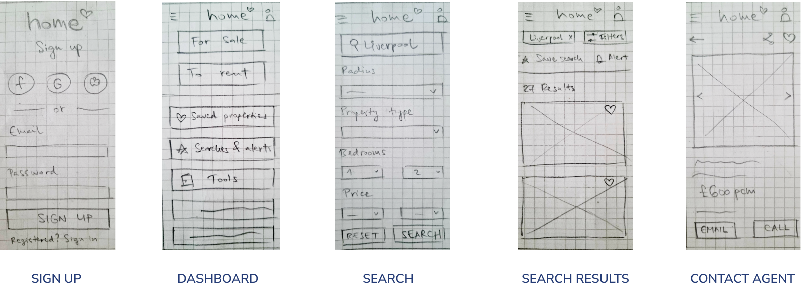

Project Overview
Real estate investment has become a popular way of achieving financial security, yet, to many, it may seem like a complicated process. People new to property investment may struggle to get started without professional guidance and waste time and money trying to find the right property to invest in. Home is a responsive web app built to address the issues new investors and buyers might be experiencing and make the process effortless, from the comfort of their sofa. Let’s see how :)
The Story of Home :)
The User Persona
Before I got down to any designing at all, I wanted to know who I am designing for and understand their needs, goals, behaviours, pain points and motivations. For the purposes of this project, I was provided with a user persona and stories. Please meet Rashida, my user representative.
User Stories
Task Analyses & User Flows
Once I got to know Rashida a bit better, I was ready to carry out task analyses and draw user flows based on her needs and goals.
TASKS
Search & Filter | Save Property
Wireframing
When the flows were ready, it was time to get creative and draw simple sketches of my web app, focusing on layout and navigation, but also responsiveness. My goal was to come up with an easy-to-navigate design that also scales nicely and translates well to other devices.
Visual Concepts & Iterations
When I was happy with the basic layout and navigation of the app, I wanted to set up how it would look and feel. First, I created a moodboard to define a visual direction for the app and show the concepts and values it was going to be built on.
High-fidelity Wireframes
Next, I translated my design inspiration and visual concept into high-fidelity wireframes. This was a gradual process that involved a lot of rethinking, redesigning and iterations. I was trying to implement solutions Rashida would find useful and was guided by the moodboard when creating visual elements.
Prototyping & Animations
Home was now ready to come to life and become an app :) I prototyped the screens and added animations to buttons and certain elements. Feel free to interact with the prototype.
Style Guide
Finally, I created a style guide to ensure branding and visual consistency. Click here to view detailed style guide.
Style guide for app colours
Going Responsive
To make my designs responsive, I selected my tablet and desktop breakpoints, applied the relevant grids and styled the elements in accordance with the style guide.
The Home app on different devices
Mobile mockup
Tablet mockup
Desktop mockup
Conclusion
Thinking in a responsive web app was quite a challenge! :) When doing mobile-first and then bigger breakpoints it’s important to consider how to organize information and elements, how to adjust the design to provide a consistent visual and user-friendly experience and have a holistic vision of how things will come together.
The journey through this UI design project enhanced my UI design skills, added new tools to my workflow, deepened my knowledge about colours, typography, icons, grids, UI elements, style guides, prototyping and responsive concepts.
Thanks so much for reading :)